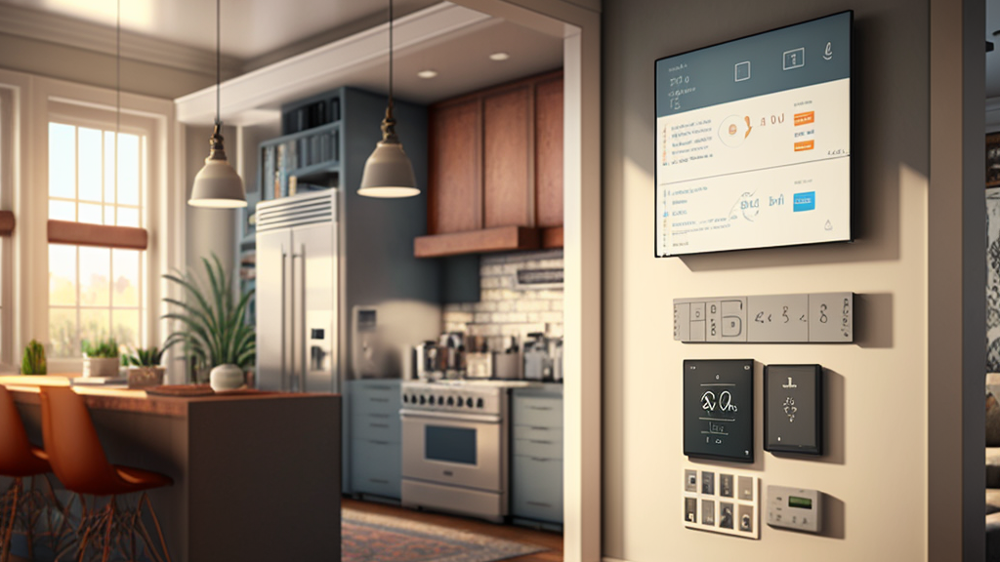
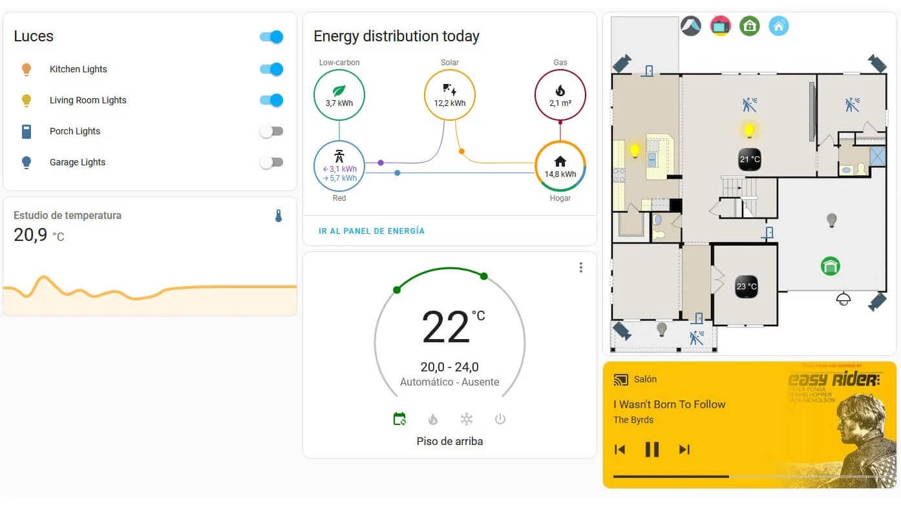

Nuestros Servicios
Planificación
Estamos presentes en todo el proceso de automatización de tu hogar desde el inicio hasta luego de la instalacion. Presupuestamos sin cargo en función de tus necesidades. No dudes en contactarnos para contarnos tus necesidades y obtener un presupuesto estimativo remotamente.

Automatización
Una vez aprobado el presupuesto por el cliente, y realizada la seña, se procede a realizar la instalación, donde se montan y configuran todos los dispositivos de automatización en la vivienda, otorgándole también al cliente una breve capacitación de sobre como se usan estos dispositivos.

Post Venta
Nuestras instalaciones poseen una garantía de 6 meses sobre cualquier inconveniente técnico que pudiera surgir, así como también poseemos servicio técnico, de mantenimiento y actualización, tanto remoto como in-situ.